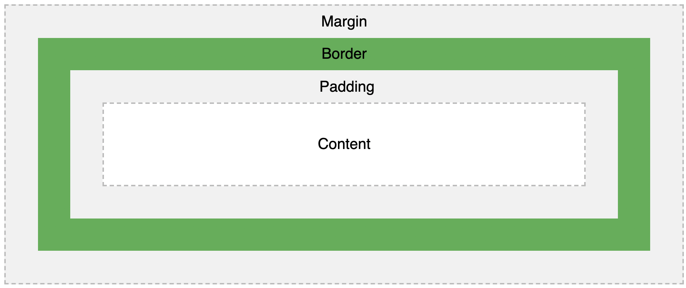

And when it comes to styling these boxes and how they appear on the page, we can apply CSS to essentially wraps around each and every HTML element. This wrapping consists of: margins, borders, padding, and the actual content itself. Take a look below for an overview of what I'm saying.
Let’s start with padding. Padding is a property that can be used to create transparent space around an elements content. It can be applied to all four sides of the element, or just specific sides. Below are examples of how you can apply padding to an element:
In the example below, you can see that the two boxes each have different padding applied to them. One has 20px applied around the entire element, and one has 30px applied to the top and bottom and 40px to the right and left.
See the Pen padding by carter-bardellmunro (@carter-bardellmunro) on CodePen.
Borders are where you can get slightly more creative! By using borders, the user can decide the style, width, and colour of the border around a certain element.
Just like padding, a border can wrap around the entire element, or just certain sides. Below are some examples of how you can apply a border:
Below you can see three borders that have had different styles applied to them.
See the Pen BapGrBo by carter-bardellmunro (@carter-bardellmunro) on CodePen.
Margins are the outer layer of an element, outside of any defined borders, and can be used to create space between neighbouring elements. The greater the margin, the greater the distance between elements.
The same happens in reverse. If the margin is negative, you can start to overlap elements. Below are some examples of margins in action.
See the Pen margin by carter-bardellmunro (@carter-bardellmunro) on CodePen.